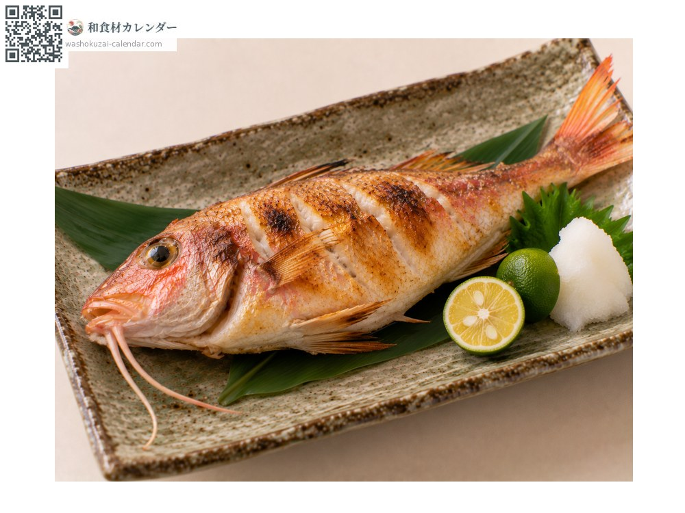
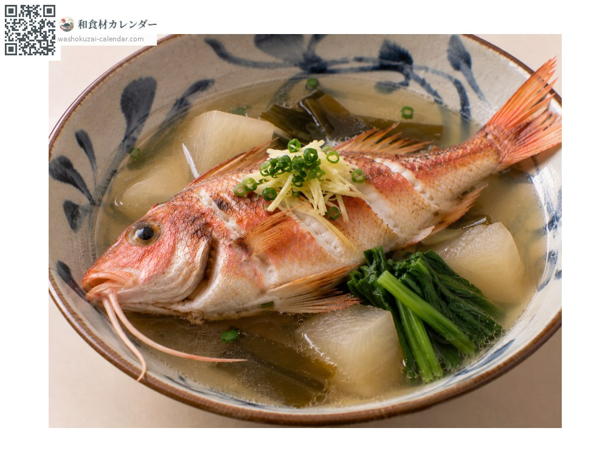
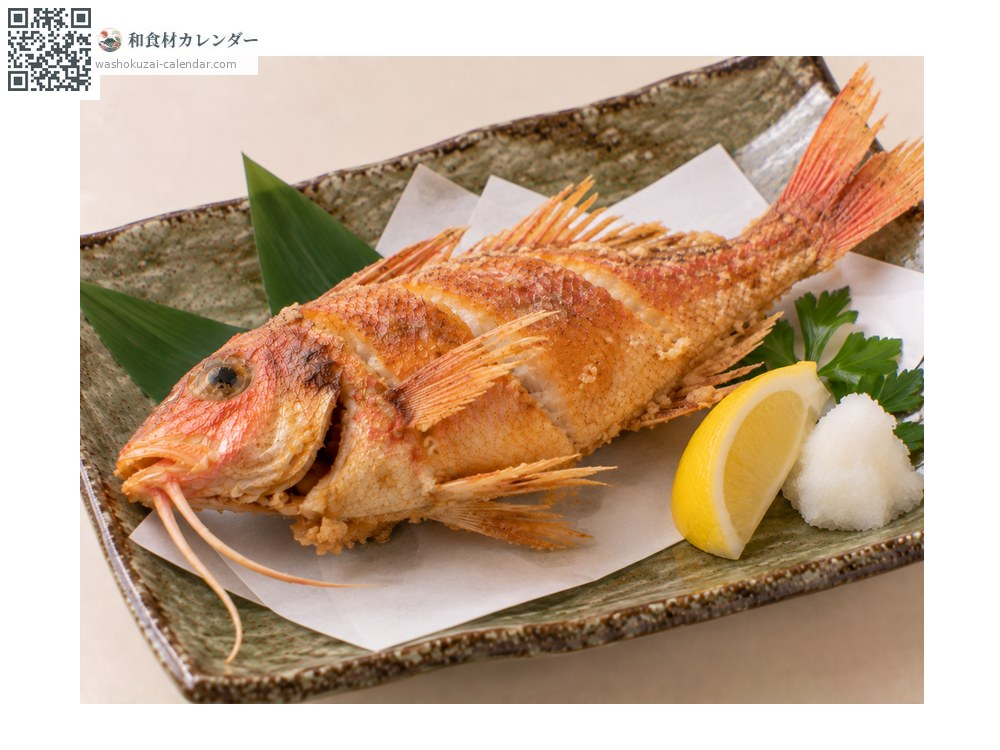

อาหารทะเล
ปลาโอจิซัง (ปลาแพะลายขวาง)
オジサン おじさん
อร่อยที่สุดในเดือน มิ.ย., ก.ค., ส.ค., ก.ย.

ช่วงที่อร่อยที่สุด
ม.ค.
ก.พ.
มี.ค.
เม.ย.
พ.ค.
มิ.ย.
ก.ค.
ส.ค.
ก.ย.
ต.ค.
พ.ย.
ธ.ค.
ช่วงอร่อยที่สุดมีจำหน่าย
วิธีปรุง

ย่างเกลือ
เป็นเมนูประจำของโอกินาวะ ย่างด้านหนังให้หอม

มาสึนิ (ตุ๋นเกลือกับเหล้าอาวาโมริ)
วิธีปรุงแบบโอกินาวะด้วยเกลือและเหล้าอาวาโมริ ทำให้รสของปลาเด่นขึ้น

คาราอาเกะ
ตัวเล็กทอดทั้งตัว กินได้ทั้งกระดูก
วิธีเลือก
ลำตัวสีสดใส หนวดใต้คางสมบูรณ์ ตาใส
วิธีเก็บรักษา
ควักไส้แล้วแช่เย็น ใช้ภายใน 2 วัน
แหล่งผลิตหลัก
เกร็ดน่ารู้
มีหนวดสองเส้นใต้คาง จึงเป็นที่มาของชื่อญี่ปุ่นที่แปลว่าลุง เป็นปลาที่ชื่อทางการเป็นคำในชีวิตประจำวัน ที่โอกินาวะนิยมกินกันมาก
วัตถุดิบที่อร่อยที่สุดในช่วงเดียวกัน
 ปลาอาจิ (ปลาทูแขกญี่ปุ่น)
ปลาอาจิ (ปลาทูแขกญี่ปุ่น) ปลาชิมะอาจิ (ปลาสำลีแถบเหลือง)
ปลาชิมะอาจิ (ปลาสำลีแถบเหลือง) ปลาอิวาชิ (ปลาซาร์ดีนญี่ปุ่น)
ปลาอิวาชิ (ปลาซาร์ดีนญี่ปุ่น) ปลาโคฮาดะ (ปลาตะลุมพุกญี่ปุ่น)
ปลาโคฮาดะ (ปลาตะลุมพุกญี่ปุ่น) ปลาซันมะ
ปลาซันมะ ปลาคัมปาจิ (ปลาหางเหลืองครีบยาว)
ปลาคัมปาจิ (ปลาหางเหลืองครีบยาว) ปลาคัตสึโอะ (ปลาโอ)
ปลาคัตสึโอะ (ปลาโอ) ทูน่าครีบเหลือง
ทูน่าครีบเหลือง